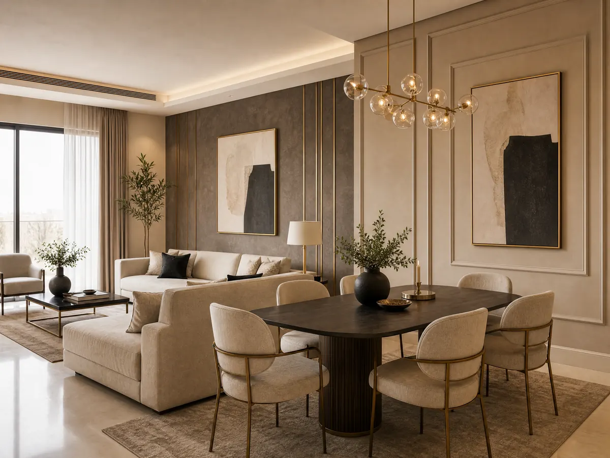

مقاول ترميم الرياض: 5 خطوات لتجديد منزلك بثقة 053 116 9312
عندما تبدأ علامات التلف في الظهور على منزلك يصبح البحث عن مقاول ترميم الرياض خطوة مهمة لاستعادة جمال المساحة والاستفادة منها بصورة أفضل، لكن نجاح التجديد لا يعتمد على إصلاح العيوب الظاهرة فقط، بل يحتاج إلى تحديد الأعمال المطلوبة واختيار المواد المناسبة والتخطيط للتكلفة قبل بدء التنفيذ.
وقد يكون هدفك تجديد غرفة قديمة أو تحسين مظهر الجدران، أو إضافة مساحة جديدة تلائم احتياجات الأسرة، ولكل مشروع متطلبات مختلفة ينبغي دراستها بعناية، وإذا كنت تخطط لتحديث منزلك في الرياض، فإن البدء بخطة واضحة يساعدك على ترتيب الأولويات واختيار الحلول التي تناسب ميزانيتك، مع الاهتمام بالتفاصيل الجمالية التي تمنح المكان مظهرا متناسق ومريح.
عند البحث عن «مقاول ملاحق في الرياض»، قارن مواصفات الخامات ونطاق العمل ونماذج التنفيذ قبل الاتفاق على المشروع.
مقاول ترميم الرياض
قبل الاتفاق مع أي مقاول ترميم الرياض، تخيل النتيجة التي تريد الوصول إليها، ثم حدد المشكلات التي تحتاج إلى معالجة والتغييرات التي ستجعل المكان أكثر ملاءمة لحياتك اليومية، فوضوح الهدف يساعدك على اتخاذ قرارات أفضل من البداية:
- حدد حالة المبنى: افحص الجدران والأسقف والأرضيات، وحدد العيوب الظاهرة، مع الاستعانة بمختص مؤهل عند وجود شروخ مقلقة أو مشكلات إنشائية أو تسربات.
- رتب الأعمال حسب الأولوية: ابدأ بالمشكلات التي قد تؤثر في سلامة المبنى أو تسبب أضرارا إضافية، ثم انتقل إلى التشطيبات والتحسينات الجمالية.
- حدد الميزانية المتاحة: خصص ميزانية للأعمال الأساسية، واترك هامشا للتكاليف غير المتوقعة التي قد تظهر بعد فحص الموقع.
- اطلب وصفا واضحا للأعمال: تأكد من أن عرض السعر يحدد نطاق العمل والمواد المستخدمة والمراحل المتفق عليها، حتى لا تظهر اختلافات في التوقعات أثناء التنفيذ.
- خطط لشكل المكان النهائي: فكر في الألوان والخامات والإضاءة وتوزيع الأثاث قبل تنفيذ التشطيبات، حتى لا تضطر إلى تغيير بعض العناصر بعد الانتهاء.
تابع أيضاً: معلم بديل الرخام الرياض: تركيب احترافي 0531169312 تصميم عصري
بناء ملاحق في الرياض لاستغلال المساحة بذكاء
قد تحتاج الأسرة إلى مقاول ترميم الرياض لغرفة إضافية أو مجلس مستقل أو مساحة تخدم احتياجات المنزل المتغيرة، وهنا يصبح بناء الملحق مشروعا يحتاج إلى دراسة مسبقة، لأن نجاحه يرتبط بملاءمة المساحة والتصميم والمتطلبات النظامية وطبيعة الاستخدام:
- حدد الغرض من الملحق: هل تحتاج إلى غرفة إضافية أم مجلس أم مساحة متعددة الاستخدامات؟ تحديد الهدف يساعد على اختيار المساحة والتصميم المناسبين.
- افحص الموقع المتاح: راجع مساحة الارتداد أو السطح ومدى ملاءمته للمشروع، مع التحقق من الاشتراطات والقيود التي تنطبق على العقار.
- اختر طريقة البناء المناسبة: تختلف الحلول المستخدمة بحسب طبيعة الموقع والتصميم والميزانية، لذلك ينبغي مقارنة البدائل من حيث المواصفات والعزل والتشطيب.
- اهتم بالعزل والتهوية: يجب مراعاة الحرارة والرطوبة والتهوية والإضاءة الطبيعية عند تخطيط الملحق، حتى تكون المساحة عملية ومريحة للاستخدام.
- خطط للتشطيبات الداخلية: حدد أسلوب الجدران والأسقف والأرضيات والألوان قبل التنفيذ، لتنسجم المساحة الجديدة مع الطابع العام للمنزل.
مقاول ترميم شمال الرياض
اختيار مقاول ترميم الرياض في الحي المناسب ليس كافيا وحده، بل تحتاج إلى التأكد من خبرته في نوع المشروع الذي تريده، ووضوح اتفاقه معك، وقدرته على شرح خطوات التنفيذ والتكاليف قبل البدء:
- تحقق من تخصصه: اسأل عن الأعمال المشابهة لمشروعك، لأن ترميم العناصر الإنشائية يختلف عن أعمال الديكور والتشطيبات الداخلية.
- راجع نماذج الأعمال: تساعدك الصور والتفاصيل الموثقة للمشروعات السابقة على فهم مستوى التشطيب، مع التأكد من أنها تمثل أعمال الجهة نفسها.
- اطلب عرض سعر مفصلا: ينبغي أن يوضح العرض المواد والأعمال المشمولة والتكاليف الإضافية المحتملة والمدة التقديرية للتنفيذ.
- ناقش الجدول الزمني: اتفق على مراحل العمل ومواعيدها المتوقعة، واسأل عن طريقة التعامل مع أي تغييرات قد تطرأ أثناء المشروع.
- وثق الاتفاق: احتفظ بتفاصيل نطاق العمل والمواصفات والتكلفة وشروط الدفع مكتوبة، لتكون مرجعا واضحا لك وللجهة المنفذة.
اقرأ الآن: معلم تركيب باركيه بالرياض لخدمات أرضيات فاخرة 0531169312
تجديد الحمامات: التفاصيل التي تستحق الاهتمام
يحتاج تجديد الحمام إلى التعامل مع مقاول ترميم الرياض وأكثر من جانب في الوقت نفسه، لأن المظهر النهائي يرتبط بحالة السباكة والعزل والأرضيات والجدران والتهوية، لذلك من الأفضل تقييم الاحتياجات الفنية قبل اختيار الألوان والخامات التي ستظهر بعد انتهاء العمل:
- فحص مصادر التسرب: عند وجود رطوبة أو تسرب، يجب تحديد مصدر المشكلة ومعالجتها قبل تغطية الجدران أو الأرضيات بمواد جديدة.
- مراجعة العزل المائي: ينبغي التأكد من ملاءمة العزل لحالة الحمام ومتطلبات التنفيذ، والاستعانة بمختص لمعالجة المشكلات الفنية عند الحاجة.
- اختيار الأرضيات المناسبة: راع خصائص مقاومة الانزلاق وسهولة التنظيف ومدى ملاءمة الخامة للاستخدام في المناطق الرطبة.
- تنسيق الجدران والإضاءة: يمكن للألوان المتناسقة والإضاءة المدروسة أن تمنح الحمام إحساسا بالاتساع والنظافة.
- التأكد من جودة التشطيب: راجع انتظام الفواصل وتفاصيل الالتقاء بين الخامات والتشطيبات النهائية قبل اعتماد العمل.
كيف تمنح التشطيبات الداخلية منزلك مظهرا متجددا؟
ليس كل تجديد بحاجة إلى تغيير المبنى بالكامل ففي بعض الحالات يمكن للتشطيبات الداخلية أن تحدث فرقا واضحا في شكل الغرف، خصوصا عند اختيار مقاول ترميم الرياض متميز وخامات متناسقة وتوزيع التفاصيل بطريقة تخدم المساحة وتبرز جمالها:
- الجبس بورد: يساعد على إضافة تفاصيل عصرية للأسقف والجدران، ويمكن تنسيقه مع الإضاءة بما يتناسب مع تصميم الغرفة.
- بديل الرخام: يمنح بعض الجدران مظهرا أنيقا، ويمكن استخدامه لإبراز مساحة محددة ضمن التصميم الداخلي.
- ورق الجدران: يتيح تنويعا في الألوان والنقوش، ويساعد على تغيير أجواء الغرفة دون الحاجة إلى تغيير جميع عناصرها.
- التكسيات الخشبية: تضيف إحساسا بالدفء، ويمكن تنسيقها مع الألوان المحايدة والإضاءة لإبراز التفاصيل الداخلية.
- الباركيه: يمنح الأرضيات مظهرا دافئا، ويمكن اختيار اللون والتصميم بما ينسجم مع الأثاث وبقية الخامات.
شاهد أيضًا: معلم شيبورد في الرياض
ديكورات الأحلام: لمسات داخلية تكمل مشروعك
إذا انتهيت من تحديد احتياجات المقاول المختص وتبحث عن تجديد مظهر المساحات الداخلية، فإن ديكورات الأحلام تقدم خدمات ديكور في الرياض تشمل الجبس بورد وبديل الرخام وورق الجدران والباركيه والتكسيات الخشبية والشيبورد، ويمكنك الاطلاع على الخيارات المنشورة لمعرفة ما يناسب تصميم منزلك:
- الموقع الإلكتروني: ديكورات الأحلام للتعرف على خدمات الديكور الداخلي.
- رقم الهاتف والواتساب: 0531169312 للتواصل والاستفسار عن تفاصيل الخدمات.
- الجبس بورد: خيار لتحديث مظهر الأسقف والجدران بتصاميم عصرية.
- بديل الرخام وورق الجدران: حلول لإضافة تفاصيل جمالية إلى الجدران وتغيير أجواء الغرف.
- الباركيه والتكسيات الخشبية والشيبورد: خيارات تساعد على تنسيق الأرضيات والجدران والأسقف وفقا لطبيعة التصميم.
الخاتمة
تجديد المنزل الناجح يبدأ بتحديد ما يحتاج إلى إصلاح وما يمكن تحسينه جماليا، ثم اختيار الجهة المناسبة لكل نوع من الأعمال، وعند البحث عن المقاول المختص، احرص على وضوح نطاق المشروع والمواصفات والتكاليف والجدول الزمني قبل اتخاذ قرارك، أما إذا كانت خطوتك التالية هي تحسين مظهر الغرف والأسقف والجدران، فيمكنك زيارة موقع ديكورات الأحلام لتتعرف عن خدمات الجبس بورد وبديل الرخام وورق الجدران والباركيه والتكسيات الخشبية والشيبورد، واختيار التفاصيل التي تمنح منزلك مظهرا أكثر انسجاما مع ذوقك.
الأسئلة الشائعة
ما هي أفضل شركة لترميم حمامات في الرياض؟
تعتمد أفضل شركة لترميم الحمامات على طبيعة المشكلة والخدمات المطلوبة، فهناك فرق بين معالجة التسربات والعزل والسباكة وبين تغيير الأرضيات والجدران وتحسين المظهر الداخلي، وقبل الاختيار تأكد من أن الشركة تقدم الأعمال التي تحتاج إليها فعليا واطلب عرضا واضحا يحدد المواد ونطاق التنفيذ والتكلف مع مراجعة الأعمال السابقة إن توفرت.
كم تبلغ تكلفة ترميم منزل في الرياض؟
تختلف تكلفة ترميم المنزل حسب مساحة العقار وحالته ونوع الإصلاحات المطلوبة والخامات ومستوى التشطيب، فقد تقتصر بعض المشروعات على تحسينات داخلية بسيطة، بينما تحتاج مشروعات أخرى إلى إصلاحات فنية متعددة، وللحصول على تقدير مناسب ينبغي تحديد الأعمال المطلوبة وفحص الموقع وطلب عرض تفصيلي يوضح التكاليف والمواد والمراحل المشمولة.
كيف أختار مقاول ترميم مناسب في الرياض؟
ابدأ بتحديد نوع العمل الذي تحتاج إليه ثم اختر جهة لديها تخصص مناسب وخبرة في المشروعات المشابهة، واطلب عرض سعر مكتوبا يوضح نطاق العمل والمواد والمدة المتوقعة والتكاليف الإضافية المحتملة.
هل تبحث عن تنفيذ احترافي لمشروعك؟
نحن في ديكورات الأحلام نوفر لك أفضل الخامات وأمهر الفنيين في الرياض.
تواصل معنا عبر واتساب